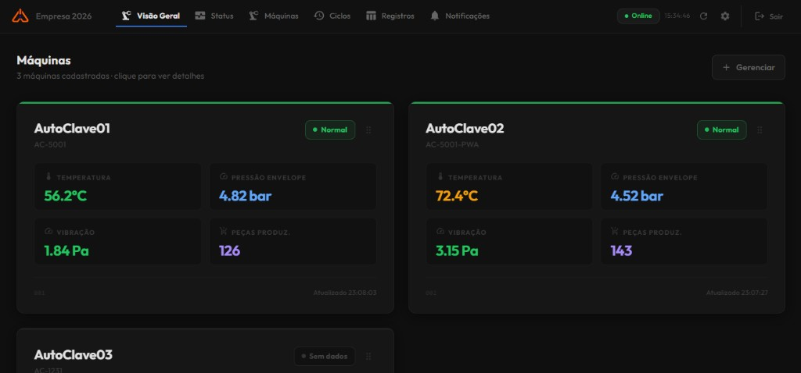

Dashboard multi-máquina
Visão geral com cards arrastáveis (drag-and-drop), ciclos ativos, métricas ao vivo e navegação para o painel detalhado de cada autoclave.
Industrial Monitoring Platform — solução completa para monitoramento de autoclaves e equipamentos de produção, com ingestão de dados via MQTT, persistência em PostgreSQL (Supabase), API REST autenticada, dashboards ao vivo via WebSocket e rastreabilidade de pneus por ciclo de produção.
Dados espalhados em CLPs, sem visibilidade central, histórico confiável ou alertas em tempo real no chão de fábrica.
Plataforma multi-tenant com ingestão MQTT, dashboards ao vivo via WebSocket e rastreabilidade de pneus por ciclo de autoclave.
Diagnóstico de falhas em minutos (antes: horas), alertas automáticos com cooldown e histórico completo por máquina.

O Habilita I.M.P. resolve um problema real do chão de fábrica: dados espalhados em CLPs sem visibilidade central, histórico confiável ou alertas em tempo real. A plataforma recebe telemetria de sensores e CLPs via broker MQTT, processa no backend Node.js, persiste no Supabase e entrega uma interface React moderna para operadores, supervisores e administradores.
O sistema é multi-tenant — cada fábrica/cliente opera de forma isolada com Row Level Security (RLS) — e evoluiu em quatro versões, da leitura básica de temperatura e vibração até a rastreabilidade completa de pneus vinculados a cada ciclo de autoclave.
numero_ciclo sequencial por máquina
Visão geral com cards arrastáveis (drag-and-drop), ciclos ativos, métricas ao vivo e navegação para o painel detalhado de cada autoclave.
Backend assina tópicos wildcard, valida máquina e empresa, processa 4 tipos de mensagem: telemetria, início/fim de ciclo e alarmes manuais.
Ciclos sequenciais por máquina, KPIs em tempo real, gráficos ApexCharts, vínculo de códigos de pneu e histórico filtrável.
Detecção automática de limites de temperatura e vibração com cooldown anti-spam (30s), prioridades e reconhecimento individual ou em lote.
Tabela histórica com 14+ colunas, filtros por período, status de motor e 6 válvulas, e cards com cores dinâmicas por limiar.
Autenticação JWT via Supabase Auth, isolamento por empresa com RLS, roles (admin/user/viewer) e rooms WebSocket por tenant.
O fluxo de leitura MQTT segue 9 etapas: o CLP publica JSON no tópico
empresas/{empresa_id}/maquinas/{uuid}/{tipo},
o backend valida, persiste em leituras_maquina, verifica limites, gera alarmes se necessário e emite eventos via Socket.IO para a sala empresa_{id}.
Telas do sistema em operação — clique para ampliar.
Quer ver mais projetos?
Voltar ao portfólio